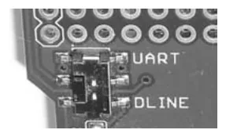
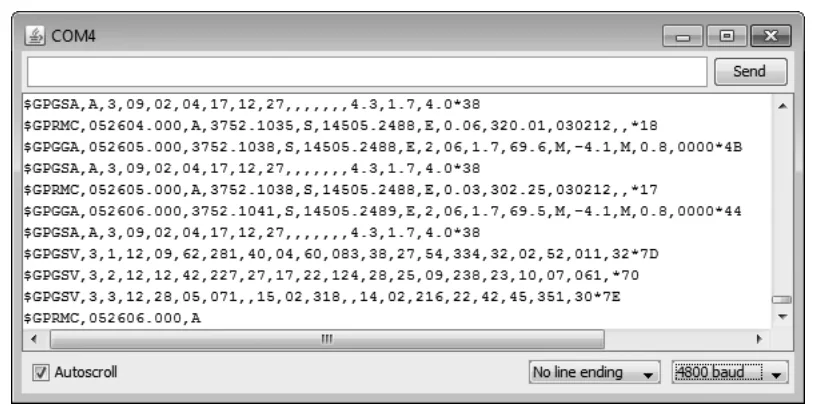

After you buy the GPS kit, it’s a good idea to make sure that it’s working and that you can receive GPS signals. GPS receivers require a line of sight to the sky, but their signals can pass through windows. It’s usually best to perform this test outdoors, but it might work just fine through an unobstructed window or skylight. To test reception, you’ll set up the shield and run a basic sketch that displays the raw received data.
To perform the test, first connect your GPS receiver via the cable to the shield, and then attach this assembly to your Arduino. Notice the small switch on the GPS shield, which is shown in Figure 13-4.

When it’s time to upload and run sketches on your GPS shield, move the switch to the DLINE position, and then change it to UART and be sure to turn on the power switch for the receiver.
Enter and upload the sketch in Listing 13-1.
// Listing 13-1
void setup()
{
❶ Serial.begin(4800);
}
void loop()
{
byte a
❷ if ( Serial.available() > 0 )
{
a = Serial.read(); // get the byte of data from the GPS
❸ Serial.write(a);
}
}This sketch listens to the serial port at ❷, and when a byte of data is received from the GPS module, it is sent to the Serial Monitor at ❸. (Notice that we start the Serial at 4,800 bps at ❶ to match the data speed of the GPS receiver.)
Once you’ve uploaded the sketch, move the data switch back to UART. Now check the LED on the GPS receiver that tells us its status. If the LED is lit, the GPS is trying to lock onto the satellite signals. After about 30 seconds the LED should start blinking, which indicates that it is receiving data from the satellite. After the LED starts blinking, open the Serial Monitor window in the IDE and set the data speed to 4,800 baud. You should see a constant stream of data similar to the output shown in Figure 13-5.

The data is sent from the GPS receiver to the Arduino one character at a time, and then it is sent to the Serial Monitor. But this isn’t very useful as is, so we need to use a new library that extracts information from this raw data and converts it to a usable form. To do this, download and install the TinyGPS library from http://www.arduiniana.org/libraries/tinygps/ using the method described in “Expanding Sketches with Libraries” on page 169.